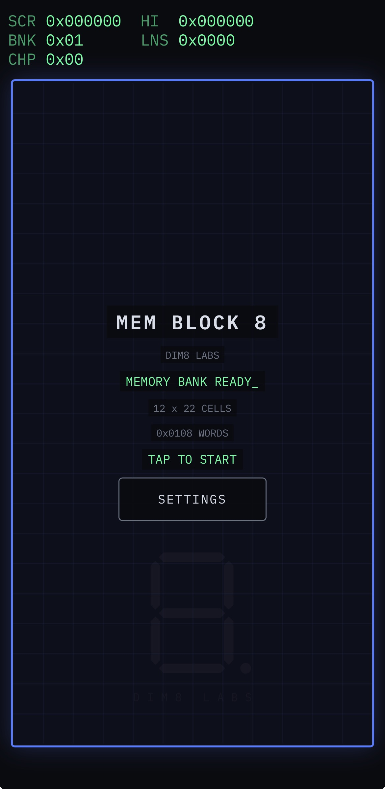
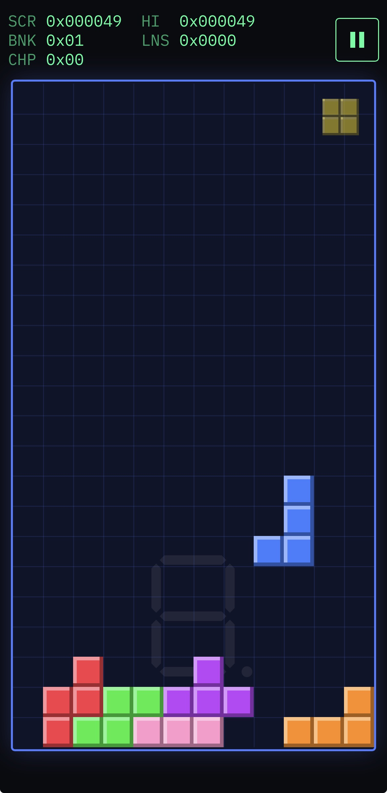

Web / Progressive Web App
Mem Block 8
A colorful cell-based puzzle game built around memory banks, computer registers, and deliberate software architecture.
A memory system you can play
Pieces of three, four, and five cells descend into a 12 × 22 memory well. Complete rows to clear them, progress through memory banks, and earn microchips from multi-row clears. The game is playable now as a PWA and remains under active development.
Platform availability
- Web / PWAAvailable / In development
- Native iOSPlanned
- Native AndroidPlanned
Gameplay and identity
- Memory banks introduce changing piece mixes, speed, and playfield color.
- Multi-row clears earn microchips that are cashed in when a memory bank is completed.
- The register-style HUD switches every game value between hexadecimal, binary, and decimal.
- Touch and keyboard controls share the same abstract action system.
- Synthesized computer sounds and per-bank music reinforce the vintage-computer setting.
Engineered as a system
- The deterministic game engine is isolated from the DOM, canvas, audio, storage, clocks, and browser randomness, making it directly testable under Node.
- Game rules and progression remain separate from rendering, input, interface, audio, themes, and persistence; a small bootstrap composes those modules.
- A fixed-timestep loop keeps simulation updates independent of display frame rate, while the session layer owns screen states and routes events.
- The project uses native ES modules with no build step, framework, bundler, or runtime dependency, backed by focused tests across its major subsystems.
Local by design
The high score and settings stay in local browser storage. A versioned, cache-first service worker keeps the app shell available offline after the first load, while additional music is cached as it is encountered. The game uses no ads, leaderboards, tracking, or data collection.
Screenshots


Install App
Install the current playable web app from a supported mobile browser. Mem Block 8 remains under active development.
Safari
- Open dim8labs.com/mem-block-8/ in Safari.
- Tap Share. On some Safari layouts, tap Page Menu, then Share.
- Select Add to Home Screen.
- Enable Open as Web App, if presented.
- Tap Add.
Mem Block 8 will appear on the Home Screen and launch as an app.
Google Chrome
- Open dim8labs.com/mem-block-8/ in Chrome.
- Open the three-dot menu.
- Select Install and create shortcut, Install app, or Add to Home screen. The label varies by Chrome version.
- Confirm installation.
Mem Block 8 can then be launched from the Home Screen or app launcher.
After the app shell is cached, Mem Block 8 supports offline play. Additional music becomes available offline after it has loaded once.